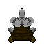
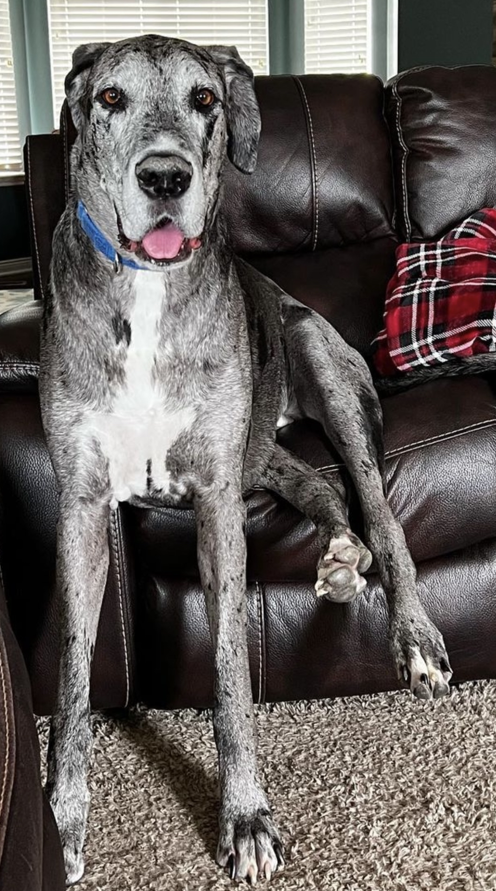

On this site you will be able to find links to my resume along with information about my radioshow.
This page will be a more comprehensive About Me section
My name is Trent Kauflin, I am a first year Cybersecurity Major who could have gone to art school. Instead of doing that however, I chose to go to IIT in hopes of making that "cybersecurity salary bank."
In order to fund my true dream of becoming a tattoo artist... at least thats what I think it is right now.
Despite not being very good I own 5 guitars, and 4 amps. My favorite guitar is a sea foam green Danelectro Baritone. Most of my time playing guitar is spent messing around and trying to make fun metal riffs on this guitar.
I love illustrating, drawing different characters, and using them to tell stories. In my high school years I designed my own Tarot Deck, and started a variety of unfinished comics.
I have worked on and done art for multiple games. One of which being a 3D cart racing game called "Sir Kart Man " that I worked on with my friend Chase.
^^^Sir Kart Man ^^^
Not only do I enjoy "writing music" I also like listening to it! Here is a list of some of my favorite bands and there genres.
I have a great dane named Buckley, who is incredibly big emphasis on big softy and also sits on the couch like a human. He enjoys barking and being a jerk, I love him.
